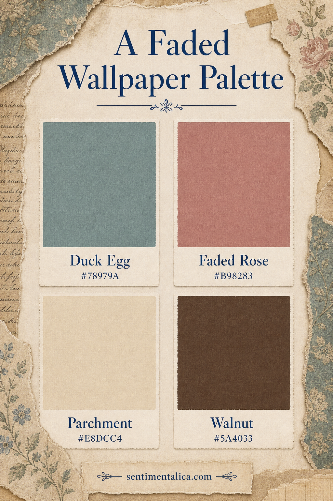
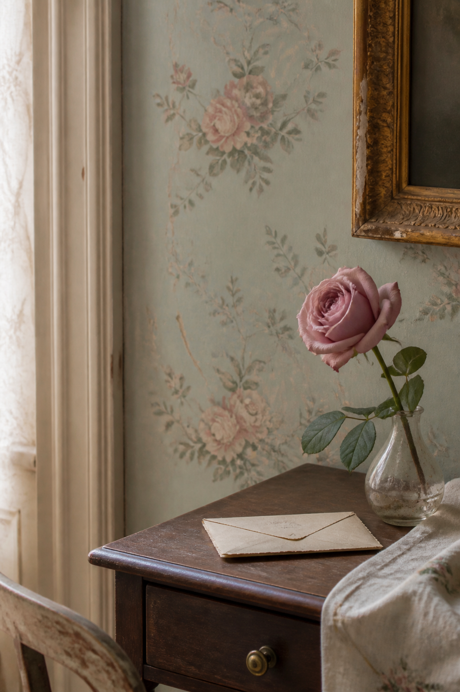

The charm of vintage wallpaper is rarely in one perfect color. It comes from a conversation between a softened background, a faded flower, aged paper, and a dark wooden note. This palette recreates that balance without making every element look brown.

Use Duck Egg as the room
Duck Egg #78979A is a muted blue-green that can carry a wall, page background, or broad painted layer. It feels historic because gray has softened the color. Pair it with visible cream paper rather than a crisp white border.
Let Faded Rose repeat the motif
Faded Rose #B98283 can appear in blossoms, ribbon, thread, or a small fabric scrap. Repeat it twice at different scales: one generous floral shape and one tiny accent. This makes the color feel embedded rather than added afterward.

Ground it with Parchment and Walnut
Parchment #E8DCC4 gives labels and writing space enough warmth to belong. Walnut #5A4033 supplies the linework: stems, frame edges, furniture, or type. Keep the darkest brown narrow so the palette remains airy.
For a paper project, try Duck Egg as the foundation, Parchment for the central writing area, Faded Rose in the decorative motif, and Walnut only where the eye needs definition.
Visuals in this article were created with AI assistance and art-directed for Sentimentalica.
Browse more vintage color inspiration in the Sentimentalica journal archive.